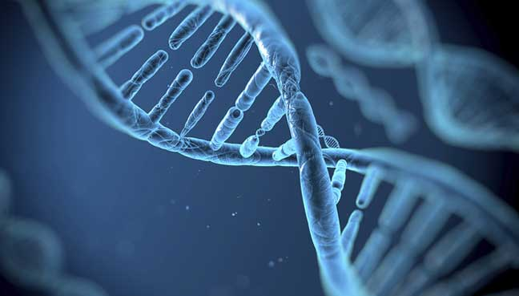

S/MARs Detection
Using various ML models, this project aims to create an R-Package to detect scaffold/matrix attachment regions (S/MARs) within the human genome.
GCN for ASD
Developed a novel Graph Convolutional Network(GCN) to identify biomarkers of Autism Spectrum Disorder(ASD) in resting state fMRI scans